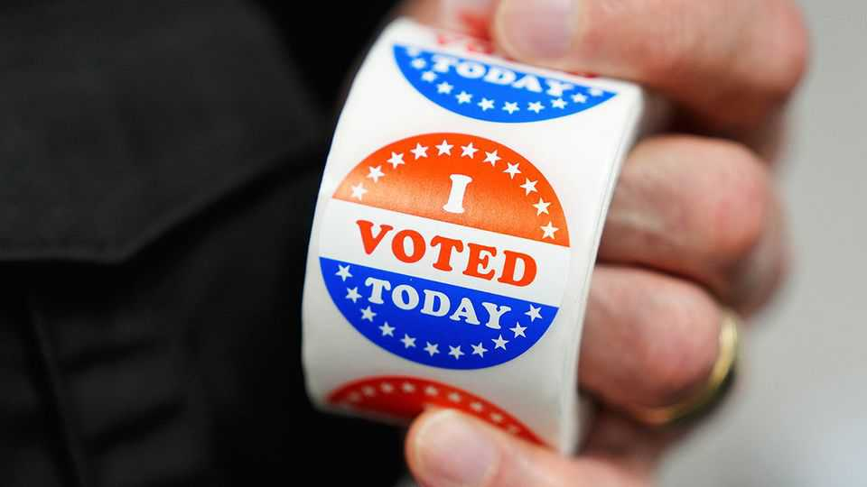

The curious, predictable case of the fake poll
Incentives for fraudulent surveys are high and oversight lax

Oct 22nd 2026
By late June, Mallory McMorrow’s campaign to be Michigan’s next senator was probably already doomed. The Democrat was squeezed between Abdul El-Sayed, a dynamic leftist, and Haley Stevens, an establishment-backed centrist, in a heated primary. When a poll was published showing she had the support of only 9% of registered voters, it seemed to be a death knell. Reporters asked when she would drop out, which she did on July 5th. It now seems that poll was fake.
An investigation published on October 20th by FiftyPlusOne, a data-journalism outfit, found that a group called Wedgewood Polls had fabricated its results. The discovery follows another in August, when the Los Angeles Times spotted a forged poll on the city’s mayoral candidates. FiftyPlusOne has also criticised a pollster for manipulating figures to serve its client. The spate of bad polls undermines an industry already widely distrusted.
Wedgewood published 15 public polls ahead of the midterm elections. Then FiftyPlusOne—led by G. Elliott Morris, a former journalist at The Economist—received a tip that the data were fake. Mr Morris and his colleagues confirmed the forgery by comparing Wedgewood’s figures with data from a provider the firm had supposedly employed. Mismatched identification numbers gave the scammers away. When FiftyPlusOne requested a comment from Wedgewood, the firm claimed it had forged the polls to “demonstrate the vulnerabilities” of the industry.
Whatever Wedgewood’s motive, there are many reasons to fake polls. One is to earn easy money by selling fraudulent services to campaigns and political groups, which tend to spend heavily on public-opinion research; another is to manipulate prediction markets, where billions are bet on elections. Fake polls can also be used to influence elections themselves, for example by making candidates seem unviable. Ms McMorrow claims that donations dried up after the fraudulent poll was published.
With so much cash coursing through elections in America, the incentives to fake polls are greater than in other democracies. However, oversight is weaker. In Brazil, South Korea and France, for instance, pollsters must submit information to national authorities that monitor their work. In August the Brazilian Superior Electoral Court upheld a R$53,000 ($10,600) fine for a polling firm that had released insufficient information about a poll, despite there being no suggestion that its results were misleading. America’s wild-west approach has benefits—the industry is more dynamic and understanding of public opinion is deep. But the country’s pollsters already faced public scepticism. The latest fiasco won’t help.■
Stay on top of American politics with The US in brief, our daily newsletter with fast analysis of the most important political news, and Checks and Balance, a weekly note that examines the state of American democracy and the issues that matter to voters.